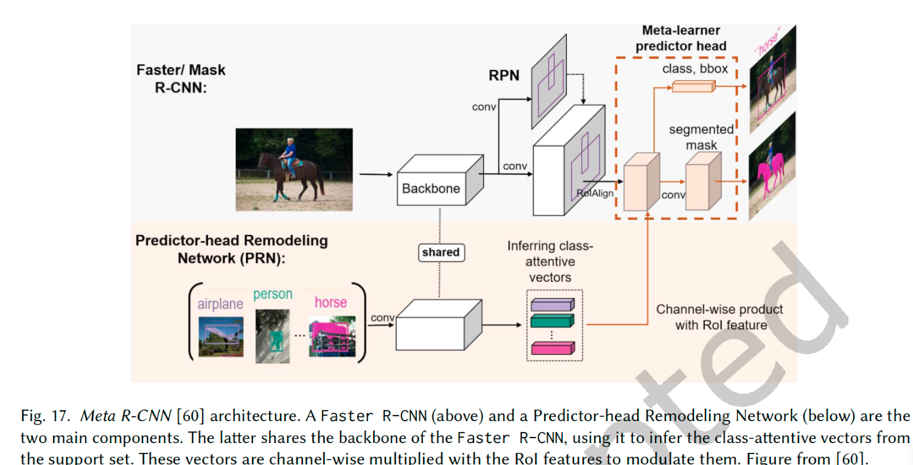

部分内容来自
中科院1区：Few-Shot Object Detection: A Survey
https://dl.acm.org/doi/abs/10.1145/3519022
few-shot learning 目标检测的方法中大概分为四种思路：
更强的数据增强（Data Augmentation）
迁移学习（TransferLearning）
度量学习（Distance Metric Learning）
meta-learning（https://wei-tianhao.github.io/blog/2019/09/17/meta-learning.html）
需要关注的问题
核心调研目的是希望优化和缓解业务上的错检，漏检问题
在添加novel数据集后会不会影响base数据集检测的精度（训练策略与实验结果）
将RPN检测ROI位置的泛化性问题和ROI分类的问题分开来看（对业务更具针对性的模型设计思路）
度量学习提高了物体分类的准确率以外对于位置回归有没有影响
将增量学习和few-shot任务尽量分开来看
TODO
跑通TFA论文代码，记录详细的实验过程和数据集的采样方式，以及可借鉴的地方。
整理下看看在业务数据集上有没有效果。代码库链接 https://github.com/ucbdrive/few-shot-object-detection
再深入看一下论文，分析预训练后，base数据集和novel数据集在finetune时两者中的不同物体的类的检测效果有没有区别
整理比较便于实现的模型结构
几种基本概念解释
Few-shot和one-shot的关系
上式指N个class，每个class有K个样本，称之为N-way-K-shot classification，即单个种类样本的数量K决定了模型的名称中为K-shot learning，而One-shot learning是一种特殊的K-shot learning，即只有一个样本具有监督信息，而zero-shot就是不为模型提供监督信息。
FSL（few-shot learning）必须从已有的很少量的输入样本中提取一部分信息，并于之前的一些先验知识相结合。
Zero-shot learning
目的是去检测到一个不存在于输入样本中的object（unseen）。训练集中存在的物体类别叫做seen，不存在的叫做unseen。与few-shot不同，zero-shot任务识别的目标物体在训练集中不存在。
有效样本定义
有两种不同的方法来确定输入的图像是否是有效的样本：对于一些作者来说，图像包含需要被检测的类的对象是可以的，而对另一些作者来说，图像不能包含同一类别的任何其他对象。前者认为一些对象可能因在同一图像中多次出现而过度表示，而后者认为，模型只允许看到每个类的K实例。
Few-shot和（domain adaption）[https://zhuanlan.zhihu.com/p/370359223]
Domain adaption：把源域和目标域的特征提取到统一的特征空间中，让不同的特征之间的距离足够近，从而实现迁移学习，如车辆在行车记录仪视角和监控摄像头视角就属于两种不同的域，期望模型能够在两种不同的域都有泛化性。
[Tao Wang, Xiaopeng Zhang, Li Yuan, and Jiashi Feng. 2019. Few-shot adaptive faster r-cnn. (2019), 7173ś7182. ]
应用场景
获取训练数据的成本较高，或者特定种类的数据很罕见，用户希望用到的训练样本越少越好
例如通过医学图像目标检测，检测一种很少见的病症
Person搜索：基于一小部分图片的某个人的特征，在大量图片，或者视频中找到这个人。可以应用在视频寻人（犯罪嫌疑人或者失踪者）
零件的异常，缺陷检测，一般工业机器造出来的零件出错率比较低，能够拿到的异常零件图片很少；如果直接用imagenet预训练的模型直接在少量图片上finetune，实验上效果比较差。
零食柜上新：
文献详细记录
实现few-shot的几种思路
基于数据增强（Data Augmentation）
这方面的应用比较小，因为缺少用于增强图像的标记边界框
Multi-Scale Positive Sample Refinement for Few-Shot Object Detection
代码库https://github.com/jiaxi-wu/MPSR（122 stars）
文献：Jiaxi Wu, Songtao Liu, Di Huang, and Yunhong Wang. 2020. Multi-scale positive sample reinement for few-shot object detection. InEuropean Conference on Computer Vision. 456ś472.（ECCV）
在训练时给faster rcnn上加一个refinement分支，将提取出来的ROI区域放大缩小到不同尺度，输入到FPN中，每层输出额外的objectness和classification的分支。推理的时候去掉这个分支
迁移学习（TransferLearning）
这个思想下的绝大多数论文都是基于faster rcnn的模型来改的，尽量用各种结构来加强frcnn对物体的分类能力和前景背景的区分能力。同时TFA指出的有好的finetune策略可以让模型具有较好的few-shot检测能力。
LSTD: A Low-Shot Transfer Detector for Object Detection (LSTD)
文献：Hao Chen, Yali Wang, Guoyou Wang, and Yu Qiao. 2018. LSTD: A Low-Shot Transfer Detector for Object Detection. In Proceedings ofthe Thirty-Second AAAI Conference on Artiicial Intelligence, (AAAI-18), the 30th innovative Applications of Artiicial Intelligence (IAAI-18),and the 8th AAAI Symposium on Educational Advances in Artiicial Intelligence (EAAI-18), New Orleans, Louisiana, USA, February 2-7,2018. 2836ś2843.（AAAI）
一种基于SSD的结构+rcnn的部分结构来实现K-shot learning。ssd主要负责识别物体的位置，后续的frcnn结构加强对物体分类的能力。
在backbone部分引出一个背景和物体二分类的loss，加强模型对物体-背景的分辨能力，ssd部分后加上两个roi pooling分支，检测源数据集的物体类别和目标数据物体类别（K-shot）。
Frustratingly Simple Few-Shot Object Detection (TFA)
提出了一种基于faster rcnn的两步骤训练的方法
核心思路是在base数据集上训练后再冻结模型浅层的部分，融合base和novel数据集后finetune最后的部分（下图黄色部分），就可以提升一定效果，这里的benchmark也是作者自己提出来的一种方法。
https://github.com/ucbdrive/few-shot-object-detection（773 stars）
Xin Wang, Thomas E. Huang, Joseph Gonzalez, Trevor Darrell, and Fisher Yu. 2020. Frustratingly Simple Few-Shot Object Detection. InProceedings of the 37th International Conference on Machine Learning, ICML 2020, 13-18 July 2020, Virtual Event. 9919ś9928.（ICML）
Generalized Few-Shot Object Detection without Forgetting
基于TFA的一些问题修改的模型。重点在于不要忘记以前识别的内容（区别于open set，open set是希望检测出所有物体，这个还是期望检测指定物体）
具体想要解决的是RPN网络输出的roi并不能达到理想的，与物体种类无关，只关心物体位置的效果。
度量学习（Distance Metric Learning）
度量学习通常包括：1）生成测试样本的embedding的函数f；
2）生成训练样本的embedding函数g；
3）比较训练生成的embedding和测试样本生成embedding的距离函数s
总结：这些模型大都会用两个分支来分别处理support图像和query图像。核心在于提取support上目标的特征来检测query图像中的类。目前的模型大多都是基于faster rcnn来修改得来的。修改思路大致如：
如何让输入到RPN前的特征图中的support中的类能更突出。如利用注意力机制让特征图中support目标更突出。
如何有一个好的embedding生成模型，让算法更好的分清前景，背景，不同对象之间的区别。如Two-way Contrastive Training Strategy，margin-based loss，利用度量学习的思想，让模型通过区分不同正负样本匹配对来学习特征
Few-Shot Object Detection with Atention-RPN and Multi-Relation Detector (Atention-RPN)（IBM）
Eli Schwartz, Leonid Karlinsky, Joseph Shtok, Sivan Harary, Mattias Marder, Sharathchandra Pankanti, Rogério Schmidt Feris, AbhishekKumar, Raja Giryes, and Alexander M. Bronstein. 2018. RepMet: Representative-based metric learning for classiication and one-shotobject detection.CoRRabs/1806.04728 (2018)(CVPR)
直接将提出的基于度量学习的head插到检测模型提取的ROIs后面。
在这种方法中，每个类由一个具有多个模式的混合模型表示，因此它们的中心可以被视为该类的代表向量。其想法是共同学习主干参数、嵌入空间以及该空间中训练类的分布，即代表向量。
Few-Shot Object Detection with Atention-RPN and Multi-Relation Detector (Atention-RPN)
不需要重新训练或fine-tune就可以识别到support image中的对象。这是通过不同的权重共享分支实现的，一个用于查询集，另一个用于支持集，支持端到端的训练

attention RPN利用support信息来过滤大多数背景框和不匹配类别中的背景框。该模块计算support特征图和query特征图之间的深度相似性。同时有个小结论，对于few-shot learning来说，多种类的训练比少种类，多数据量的训练更有用
FSCE: Few-Shot Object Detection via Contrastive Proposal Encoding
Bo Sun, Banghuai Li, Shengcai Cai, Ye Yuan, Chi Zhang; Proceedings of the IEEE/CVF Conference on Computer Vision and Pattern Recognition (CVPR), 2021, pp. 7352-7362
https://github.com/MegviiDetection/FSCE（201stars）
meta-learning
核心在于让模型学会更加泛化的特征表达，学习如何从数据丰富的基类中提取类判别特征，以指导对low-shot novel对象的预测。
该方向的模型思路也很相似：使用一个网络模块来学习输入图像的浅层特征（这些特征往往被认为是与类别无关的底层特征），另一个模块学习support类对象的特征，作为一种加权来对浅层特征进行处理，随后用已有的一些检测模型对处理后的特征图进行检测。
在针对faster rcnn模型的修改上，大致都在ROI提取部分，针对ROIs的特征和support中的类进行匹配。
在yolo中，因为yolo是端到端的处理检测问题，所以是期望输入到检测器之前的特征图已经将target类凸现出来，这里是使用类似注意力机制的方法。
Few-Shot Object Detection via Feature Reweighting (MetaYOLO)
Bingyi Kang, Zhuang Liu, XinWang, Fisher Yu, Jiashi Feng, and Trevor Darrell. 2019. Few-Shot Object Detection via Feature Reweighting. In 2019 IEEE/CVF International Conference on Computer Vision, ICCV 2019, Seoul, Korea (South), October 27 - November 2, 2019. 8419ś8428.
https://github.com/bingykang/Fewshot_Detection（423 stars）
在base数据集上预训练一个高效的目标检测模型后，只需要少量novel数据集标注样本，模型就可以检测出novel数据集上的类别的物体位置
训练策略分为两个步骤：
1.上图中三个黄色的模块合在一起同时训练，只用base class
2.一个fine-tuning阶段，模型在base和novel类别上训练，每种只用K个bbox，相对来说样本量很少，但是类别数多。
在训练过程中，Feature Extractor部分学习如何从query image中学习到meta-feature；reweighting 模块学习如何将(support image, bounding box)中的信息提取成一个embedding vector，用来调整query image中的meta-feature的数据分布（channel-wise multiplication），再输出到prediction layer（YOLOV2）进行目标检测。这里输出的c是指这个物体是否属于support输入的类别。
在推理时，可以给reweighting模块输入k个我们想要检测的目标信息，然后将输出的vector取平均，就可以移除这个reweighting模块，直接在query图像上检测到目标物体
Meta R-CNN: Towards General Solver for Instance-level Low-shot Learning (Meta R-CNN)

Xiaopeng Yan, Ziliang Chen, Anni Xu, Xiaoxi Wang, Xiaodan Liang, and Liang Lin. 2019. Meta R-CNN: Towards General Solver for Instance-Level Low-Shot Learning. In 2019 IEEE/CVF International Conference on Computer Vision, ICCV 2019, Seoul, Korea (South), October 27 - November 2, 2019. 9576ś9585
https://yanxp.github.io/metarcnn.html.（154 star）
这个模型希望用Predictor-head Remodeling Network这个模块来学习特定class的物体特征，并提取出一个class attentive vectors，这个向量包含了channel-wise soft-attention，用来加在提取出的RoI feature上让R-CNN模型能够识别到指定类别的物体

在VOC-07/12上，K = 1有mAP为19.90，当K=5有mAP为45.70，比meta-yolo要好
在MS-COCO上K=10和30分别为19.10和25.30，比meta-yolo的12.3，19.0的效果要好
存在的一些问题
FSOD和普通的检测任务一样，受限于数据的场景问题。low-shot检测器可能会遇到被检测的对象尺度和输入模型的对象尺度变化较大，角度不同，等等，也可能会遇到前景和后景区分困难的问题。此外，稀缺的数据机制还可能降低对遮挡和杂乱场景的鲁棒性。在很多决策中都必须数据的权衡，例如图像分辨率、主干类型和嵌入的维度。
在训练数据集上，目前的FSOD任务通常是在常见的经典OD数据集上进行训练，有一些成果提出新的FSOD数据集，但并不能认为是该领域的标准。
就所提出的每种方法中所利用的模型结构而言，它们之间存在着很强的相似性。在mAP方面存在差异并没有特别明显。此外，总体结果在精确度方面仍然相对较低，效果要比大多数其他物体检测的任务差一些。